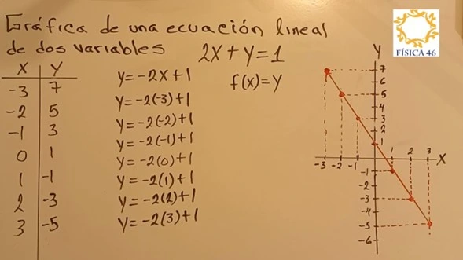
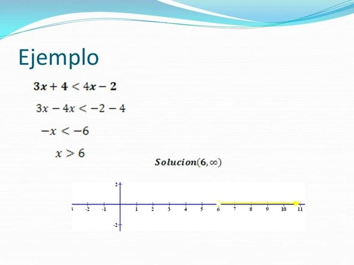

Una calculadora graficadora o computadora exhibe una parte rectangular de la gráfica en una pantalla que llamamos rectángulo de vista. Es frecuente que la pantalla predeterminada dé una imagen incompleta o confusa, de modo que es importante escoger cuidadosamente un rectángulo de vista.
Si escogemos que los valores de \(x\) varíen de un valor mínimo \(X_{min} = a\) a un valor máximo \(X_{max} = b\), y que los valores de \(y\) varíen de un valor mínimo \(Y_{min} = c\) a un valor máximo \(Y_{max} = d\), entonces la parte exhibida de la gráfica está en el rectángulo \([a, b] \times [c, d]\), es decir:
\[ (x, y) \quad \text{donde} \quad a \leq x \leq b \quad \text{y} \quad c \leq y \leq d \]
Nos referimos a éste como el rectángulo de vista \([a, b] \times [c, d]\).
Cómo funcionan las calculadoras graficadoras
La calculadora graficadora traza la gráfica de una ecuación de una forma muy similar a como lo haríamos nosotros manualmente. Determina los puntos de la forma \((x, y)\) para cierto número de valores de \(x\), espaciados uniformemente entre \(a\) y \(b\).
Si la ecuación no está definida para un valor de \(x\), o si el valor correspondiente de \(y\) está fuera del rectángulo de vista, la calculadora ignora ese valor y pasa al siguiente valor de \(x\).
La calculadora conecta cada punto trazado con el punto anterior para formar una representación continua de la gráfica de la ecuación.
Video de ayuda
Resolución Gráfica de Ecuaciones
También podemos resolver ecuaciones por el método gráfico. En este método, tratamos \(x\) como una variable y trazamos la gráfica de la ecuación \(y = 3x - 5\). Diferentes valores de \(x\) nos dan diferentes valores de \(y\).
Nuestro objetivo es hallar el valor de \(x\) para el cual \(y = 0\). A partir de la gráfica, observamos que \(y = 0\) cuando \(x = 1.7\). Entonces, la solución es \(x = 1.7\).
Observe que, a partir de la gráfica, obtenemos una solución aproximada.
Ejemplos
FUENTE: FÍSICA 46

Video de ayuda
Desigualdades
La desigualdad matemática es aquella proposición que relaciona dos expresiones algebraicas cuyos valores son distintos. Se trata de una proposición de relación entre dos elementos diferentes, ya sea por desigualdad mayor, menor, mayor o igual, o bien menor o igual. Cada una de las distintas tipologías de desigualdad debe ser expresada con diferentes signos (\(>\), \(<\), \(\geq\), \(\leq\), etc.) y tendrá una reacción diferente a las operaciones matemáticas según su naturaleza.
Por lo tanto, si queremos explicar cuál es la finalidad de este concepto con el menor número de palabras posibles, diremos que el objetivo de la desigualdad matemática es mostrar que dos sujetos matemáticos expresan valores diferentes.
Ejemplos
FUENTE: Fashionmatic
